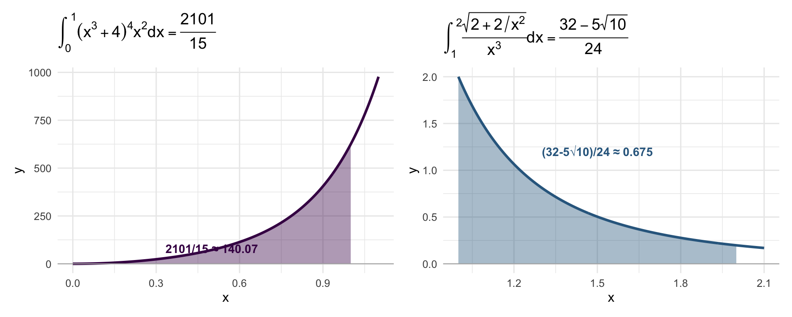

library(ggplot2)
library(patchwork)
base_t <- theme_minimal(base_size = 12)
# Q3a
x3a <- seq(0, 1.1, length.out = 300)
xf3a <- seq(0, 1, length.out = 200)
f3a <- function(x) (x^3+4)^4 * x^2
df3a <- data.frame(x = x3a, y = f3a(x3a))
dff3a <- data.frame(x = xf3a, y = f3a(xf3a))
p1 <- ggplot() +
geom_area(data = dff3a, aes(x, y), fill = "#440154", alpha = 0.4) +
geom_line(data = df3a, aes(x, y), color = "#440154", linewidth = 1.1) +
geom_hline(yintercept = 0, color = "gray70", linewidth = 0.4) +
annotate("text", x = 0.5, y = 80, label = "2101/15 ≈ 140.07",
size = 3.8, color = "#440154", fontface = "bold") +
labs(title = expression(integral((x^3+4)^4*x^2*dx, 0, 1) == frac(2101,15)),
x = "x", y = "y") + base_t
# Q3b
x3b <- seq(1, 2.1, length.out = 300)
xf3b <- seq(1, 2, length.out = 200)
f3b <- function(x) sqrt(2 + 2/x^2) / x^3
df3b <- data.frame(x = x3b, y = f3b(x3b))
dff3b <- data.frame(x = xf3b, y = f3b(xf3b))
val3b <- (32 - 5*sqrt(10)) / 24
p2 <- ggplot() +
geom_area(data = dff3b, aes(x, y), fill = "#31688e", alpha = 0.4) +
geom_line(data = df3b, aes(x, y), color = "#31688e", linewidth = 1.1) +
geom_hline(yintercept = 0, color = "gray70", linewidth = 0.4) +
annotate("text", x = 1.5, y = 1.2,
label = sprintf("(32-5√10)/24 ≈ %.3f", val3b),
size = 3.8, color = "#31688e", fontface = "bold") +
labs(title = expression(integral(frac(sqrt(2+2/x^2), x^3)*dx, 1, 2) == frac(32-5*sqrt(10), 24)),
x = "x", y = "y") + base_t
p1 + p2